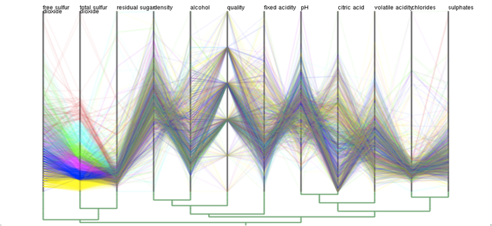

はじめに
高次元データの可視化に用いられ，次元間の相関を効果的に把握できるグラフのひとつとして，平行座標系というものがあります．
平行座標系は，各変量の値を縦に平行に並んだ軸上に取る表現方法であり，各データサンプルは，縦軸を横方向に経由する折れ線に対応します（図1）．
しかしながら，この表示方法では，データのサンプル数および次元数の増加に伴い，データに対応する折れ線次元軸が重なり，視覚的にデータの把握が困難になる視覚的乱雑さが発生します（図2)．
そこで本研究では，平行座標系の複数の座標軸を縮約してひとつにまとめ，高次元データをより少ない座標軸を用いて表示することで，この問題を解決でき，データに内在する大局的な振る舞いの視覚的な理解を実現します．
 |
 |
| 図1: 4次元データの平行座標系表示 | 図2: 24次元データの平行座標系表示 |
手法
本手法では，各軸同士の相関係数を類似度として考え，類似度の高い軸ペアから縮約することで，高次元データをより少ない座標軸を用いて，視覚的にわかりやすく平行座標系を描画する手法を提案しました．
具体的には，初めに，すべての軸ペア同士のデータ相関を計算し，算出した絶対値を，類似度とします．
次に，軸をノードとした際に，類似度を重み値としてもつエッジを対応するノード間に挿入し，軸間の相関を表すグラフを構築します．高い軸同士を結ぶ完全グラフを構築します．このとき，すべての軸ペアを考えると，小さい類似度も過度に拾い上げ，過度に局所的な情報に影響を受けてしまうため，挿入するエッジの重み値に閾値を設定し，細かい類似度の軸ペアの情報を適宜捨ててグラフを粗にするようにしました．
そして，相関の高い軸同士が並ぶような軸の順序付けを求めるために，構築した軸間の相関を表すグラフのグラフスペクトル解析を行います．グラフスペクトル解析によって次元圧縮を行い，各軸を1次元数直線上に写像し，得られた座標軸の順番に平行座標軸を並び替えます．
その後，写像した1次元数直線上において，最近接する軸の縮約を適宜行います．この際，縮約された軸におけるデータサンプルの分布は，その含まれる次元空間内において，主成分分析により求められた主軸上の分布を用いて描画します．
このようにして，平行座標系の軸を縮約することで，高次元データをより少ない座標軸を用いて表示し，デー タに内在する大局的な振る舞いの視覚的な理解を実現しました．
結果
提案手法を適用した例を，以下に示します．
図1は，「ワインの品質」の12次元のデータセットを6つのクラスタに色分けし平行座標系に表示したものを示し，図2はそのデータにおいて軸を並び替えたものを示し，そして，図3は軸を6本にまで縮約して描画した例を示します．図1では，項目数や次元数が多く，データ項目の折れ線や次元軸が複雑に重なり，視覚的にデータの把握が困難ですが，図3ではデータの全体的な傾向を維持しながら6次元に軸を減らすことによって，この問題を解決しました．
 |
 |
| (a) 12次元データの平行座標系表示 | (b) 12次元データの軸を並び替えた平行座標系表示 |
 |
| (c) 12次元データを6軸に縮約した平行座標系表示 |
また，上記の操作時においては，平行座標軸や系統樹にアニメーション効果を導入し，ユーザが自由に軸を縮約および展開できるようにしています．このアニメーション効果は，併合または展開される軸を動かすだけでなく，これらの軸を強調し，視覚的に違和感のないようにしています．このアニメーション効果により，座標軸の併合や展開の過程も視覚的に確認しながら，次元数を減らすことができるように実装されています．